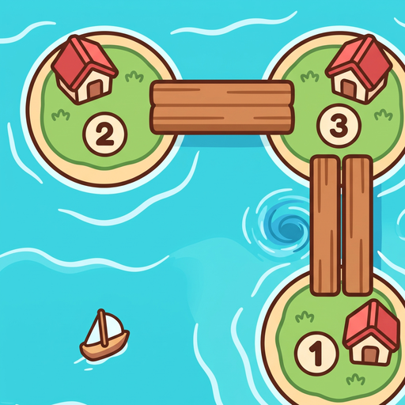

Isle Bridges
섬 다리 잇기
Each island's number tells how many bridges touch it. Build straight bridges — one or two, never crossing — and join every island village into one. Our twist: a bridge over a swirling current must always be double!
섬 숫자만큼 다리를 놓아 모든 섬마을을 하나로 이어 보세요. 물살 위 다리는 꼭 두 줄!
Get it on Google Play